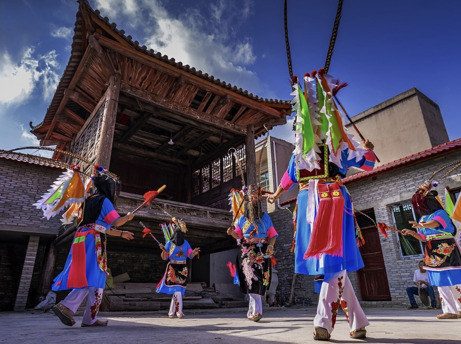
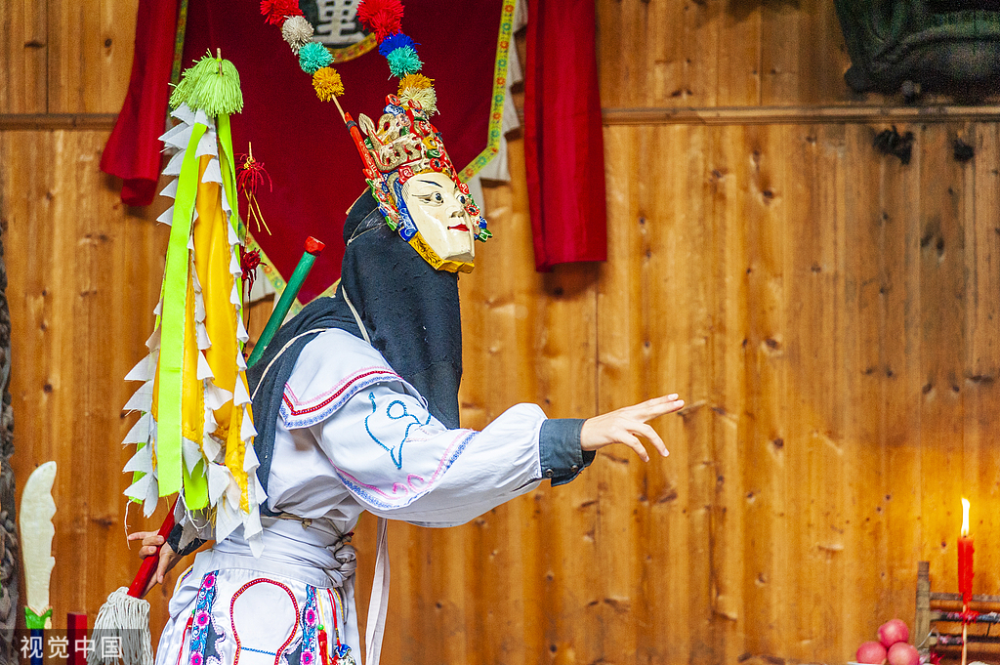

傩戏简介
傩戏是在民间祭祀仪式基础上，吸纳民间歌舞与戏曲元素发展而成的传统戏剧形式，起源于远古驱疫祈福的傩祭活动，先秦时期便已有巫傩舞雏形，历经千年传承演变，逐步形成完整的戏剧表演体系。2006年，傩戏被列入首批国家级非物质文化遗产名录，项目编号Ⅳ-89，全国各地傩戏分支先后纳入非遗保护体系。
傩戏广泛流行于贵州、安徽、湖南、湖北、江西、四川等多个省份，因地形成诸多流派，表演多佩戴手工木雕彩绘面具，以锣鼓为主要伴奏，用方言演唱，风格古朴粗犷，兼具娱神与娱人属性。作为历史、民俗、民间宗教与原始戏剧的综合体，傩戏留存着大量上古至近代的文化印记，兼具极高的艺术、历史与民俗研究价值，是我国现存最古老、传承最完整的传统戏曲形态之一。
保护和传承，不仅是对历史的尊重，更是对未来的责任。我们希望通过本网站，让更多人了解傩戏、爱上傩戏，共同守护这份珍贵的文化遗产。